多线程实现的几种方式（Thread、Runnable、Callable、线程池）及各自的特点
主要有三种实现多线程方式：
- 继承 Thread 类；（无返回值）
- 实现 Runnable 接口；（无返回值）
- 使用 ExecutorService、Callable、Future。（有返回值）
Java线程的状态及相互转换
线程的生命周期大体可分为5种状态：
新建（New）：新创建了一个线程对象。
可运行（Runnable)：线程对象创建后，其他线程（比如 main 线程）调用了该对象的 start() 方法。该状态的线程位于可运行线程池中，等待被线程调度选中，获取 CPU 的使用权。
运行（Running）：Running 的线程获得了 CPU 时间片（timeslice），执行程序代码。
阻塞（Blocked）：阻塞状态是指线程因为某种原因放弃了 CPU 使用权，也即让出了 CPU 时间片，暂时停止运行。直到线程进入可运行状态，才有机会再次获得 CPU 时间片转到运行状态。阻塞的情况分三种：
一、等待阻塞：Running 的线程执行 o.wait() 方法，JVM 会把该线程放入等待队列（waitting queue)。
二、同步阻塞：Running 的线程在获取对象的同步锁时，若该同步锁被别的线程占用，JVM 会把该线程放入锁池（lock pool)。
三、其他阻塞：Running 的线程执行 Thread.sleep(long ms) 或 t.join() 方法，或者发出了 I/O 请求时，JVM 会把该线程置为阻塞状态。当 sleep() 状态超时、join() 等待线程终止或者超时、或者 I/O 处理完毕时，线程重新转入 Runnable 状态。死亡（Dead）：线程 run()、main() 方法执行结束，或者因异常退出了 run() 方法，则该线程结束生命周期。死亡的线程不可再次复生。
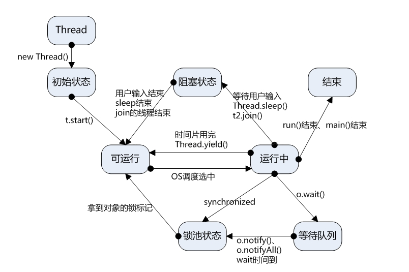
线程同步的几种方式
临界区
临界区对应着一个 CriticalSection 对象，当线程需要访问保护数据时，调用 EnterCriticalSection 函数；当对保护数据的操作完成之后，调用 LeaveCriticalSection 函数释放对临界区对象的拥有权，以使另一个线程可以夺取临界区对象并访问受保护的数据。
关键段对象会记录拥有该对象的线程句柄即其具有“线程所有权”概念，即进入代码段的线程在leave之前，可以重复进入关键代码区域。所以关键段可以用于线程间的互斥，但不可以用于同步（同步需要在一个线程进入，在另一个线程leave）
互斥量
互斥与临界区很相似，但是使用时相对复杂一些（互斥量为内核对象），不仅可以在同一应用程序的线程间实现同步，还可以在不同的进程间实现同步，从而实现资源的安全共享。
- 由于也有线程所有权的概念，故互斥量也只能进行线程间的资源互斥访问，而不能用于线程同步；
- 由于互斥量是内核对象，因此其可以进行进程间通信，同时还具有一个很好的特性，就是在进程间通信时完美的解决了”遗弃”问题。
信号量
信号量的用法和互斥的用法很相似，不同的是它可以同一时刻允许多个线程访问同一个资源，PV操作。
事件可以完美解决线程间的同步问题，同时信号量也属于内核对象，可用于进程间的通信。
事件
事件分为手动置位事件和自动置位事件。事件Event内部它包含一个使用计数（所有内核对象都有），一个布尔值表示是手动置位事件还是自动置位事件，另一个布尔值用来表示事件有无触发。由SetEvent()来触发，由ResetEvent()来设成未触发。
事件是内核对象,可以解决线程间同步问题，因此也能解决互斥问题
线程间通信
多个线程在处理同一个资源，并且任务不同时，需要线程通信来帮助解决线程之间对同一个变量的使用或操作。即多个线程在操作同一份数据时，避免对同一共享变量的争夺，于是我们引出了等待唤醒机制：wait()、notify()。一个线程进行了规定操作后，就进入等待状态（wait）， 等待其他线程执行完他们的指定代码过后 再将其唤醒（notify）。
wait()：线程调用 wait() 方法，释放了它对锁的拥有权，然后等待其他的线程来通知它，通知的方式是 notify() 或 notifyAll()，这样它才能重新获得锁的拥有权和恢复执行。要确保调用 wait() 方法的时候拥有锁，即 wait() 方法的调用必须放在 synchronized 方法或 synchronized 块中。
notify()：唤醒一个等待当前对象的锁的线程。唤醒在此对象监视器上等待的单个线程。
notifyAll()：唤醒在此对象监视器上等待的所有线程。
notify() 或 notifyAll() 方法应该是被拥有对象的锁的线程所调用。如果多个线程在等待，它们中的一个将会选择被唤醒。这种选择是随意的，和具体实现有关。
volatile关键字
volatile：易变的、不稳定的。这个关键字的作用就是告诉编译器，只要是被此关键字修饰的变量都是易变的、不稳定的。
为什么是易变的呢？因为 volatile 所修饰的变量是直接存在主存中的，线程对变量的操作也是直接反映在主存中，所以说其是易变的。
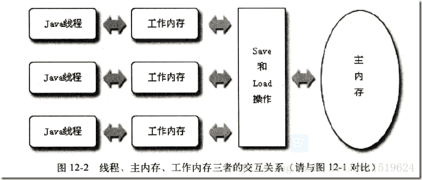
JMM 中的内存分为主内存和工作内存，其中主内存是所有线程共享的，而工作内存是每个线程独立分配的，各个线程的工作内存之间相互独立、互不可见。在线程启动的时候，虚拟机为每个内存分配了一块工作内存，不仅包含了线程内部定义的局部变量，也包含了线程所需要的共享变量的副本，当然这是为了提高执行效率，读副本的比直接读主内存更快。
那么对于 volatile 修饰的变量（共享变量）来说，在工作内存发生了变化后，必须要马上写到主内存中，而线程读取到是 volatile 修饰的变量时，必须去主内存中去获取最新的值，而不是读工作内存中主内存的副本，这就有效的保证了线程之间变量的可见性。
volatile 特点：
- 内存可见性。即线程 A 对 volatile 变量的修改，其他线程获取的 volatile 变量都是最新的，但不能保证变量具有原子性。
- 禁止指令重排序。
重排序是啥？举个栗子：
1 | public class SimpleHappenBefore { |
J.U.C包的JDK源码（CAS、AQS、ConcurrentHashMap、ThreadLocal、CyclicBarrier、CountDownLatch、Atom、阻塞队列等等）
IO（writer、reader、InputStream、OutputStream）、NIO等
四种引用及其区别和使用场景
强引用（StrongReference）
如果一个对象具有强引用，那垃圾回收器（Garbage Collection，GC）绝不会回收它。当内存空间不足，JVM 宁愿抛出 OutOfMemoryError 错误，使程序异常终止，也不会靠随意回收具有强引用的对象来解决内存不足的问题。
1 | // 强引用 |
1 | // 在一个方法的内部有一个强引用 |
1 | private transient Object[] elementData; |
软引用（SoftReference）
如果一个对象只具有软引用，当内存空间足够，GC 不会回收它；但内存空间不足时，就会回收这些对象的内存。只要 GC 没有回收它，该对象就可以被程序使用。软引用可用来实现内存敏感的高速缓存。
软引用可以和引用队列（ReferenceQueue）联合使用，如果软引用所引用的对象被 GC 回收，JVM 就会把这个软引用加入到与之关联的引用队列中。
1 | // 强引用 |
实际场景：按浏览器的后退按钮时，这个后退时显示的网页内容是重新进行请求还是从缓存中取出呢？
可能的实现策略：
- 如果一个网页在浏览结束时就进行内容的回收，则按后退查看前面浏览过的页面时，需要重新构建。
- 如果将浏览过的网页存储到内存中会造成内存的大量浪费，甚至会造成内存溢出。
1 | // 获取页面进行浏览 |
弱引用（WeakReference）
弱引用与软引用的区别：只具有弱引用的对象拥有更短暂的生命周期。在 GC 线程扫描它所管辖的内存区域的过程中，一旦发现了只具有弱引用的对象，不管当前内存空间足够与否，都会回收它的内存。不过，由于 GC 是一个优先级很低的线程，因此不一定会很快发现那些只具有弱引用的对象。
弱引用可以和引用队列联合使用，如果弱引用所引用的对象被垃圾回收，JVM 就会把这个弱引用加入到与之关联的引用队列中。
当你想引用一个对象，但是这个对象有自己的生命周期，你不想介入这个对象的生命周期，这时候你就可以用弱引用。
1 | // 强引用 |
虚引用（PhantomReference）
“虚引用”顾名思义，就是形同虚设，与其他几种引用都不同，虚引用并不会决定对象的生命周期。如果一个对象仅持有虚引用，那么它就和没有任何引用一样，在任何时候都可能被 GC 回收。主要用来跟踪对象被 GC 回收的活动。
虚引用与软引用和弱引用的区别：虚引用必须和引用队列联合使用。当 GC 准备回收一个对象时，如果发现它还有虚引用，就会在回收对象的内存之前，把这个虚引用加入到与之关联的引用队列中。
1 | ReferenceQueue queue = new ReferenceQueue(); |
可以通过判断引用队列中是否加入了虚引用，来了解被引用的对象是否将要被垃圾回收。如果发现某个虚引用已经被加入到引用队列，那么就可以在所引用的对象的内存被回收之前采取必要的行动。
对象序列化与反序列化
序列化：把堆内存中的 Java 对象数据，通过某种方式把对象存储到磁盘文件中或者传递给其他网络节点（在网络上传输）。这个过程称为序列化。通俗来说就是将数据结构或对象转换成二进制串的过程。
反序列化：把磁盘文件中的对象数据或者把网络节点上的对象数据，恢复成Java对象模型的过程。也就是将在序列化过程中所生成的二进制串转换成数据结构或者对象的过程。
为什么要做序列化？
- 在分布式系统中，此时需要把对象在网络上传输，就得把对象数据转换为二进制形式，需要共享的数据的 Java 对象，都得做序列化。
- 服务器钝化：如果服务器发现某些对象好久没活动了，那么服务器就会把这些内存中的对象持久化在本地磁盘文件中（Java 对象转换为二进制文件）；如果服务器发现某些对象需要活动时，先去内存中寻找，找不到再去磁盘文件中反序列化我们的对象数据，恢复成 Java 对象。这样能节省服务器内存。
内存分区
内存溢出
内存泄漏排查
类加载机制
JVM 类加载机制分为五个部分：加载，验证，准备，解析，初始化。
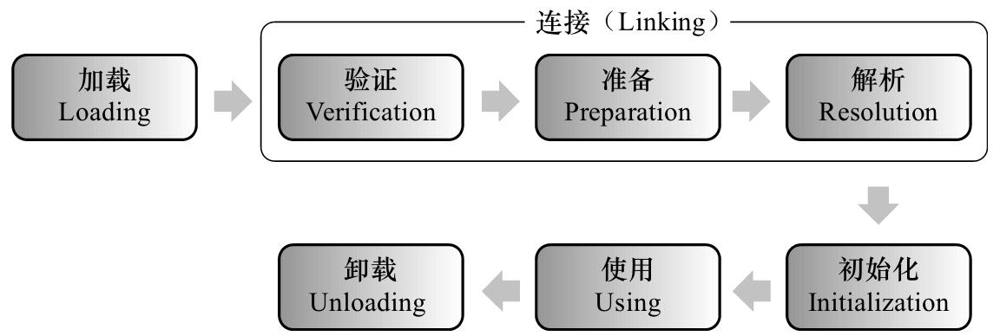
加载
这个阶段会在内存中生成一个代表这个类的 java.lang.Class 对象，作为方法区这个类的各种数据的入口。
注意：这里不一定要从一个 Class 文件获取，这里既可以从 ZIP 包中读取（比如 jar 包和 war 包），也可以在运行时计算生成（动态代理），也可以由其它文件生成（比如将 JSP 文件转换成对应的 Class 类）。
验证
确保 Class 文件的字节流中包含的信息是否符合当前虚拟机的要求，并且不会危害虚拟机自身的安全。
准备
正式为类变量分配内存并设置类变量的初始值阶段，即在方法区中分配这些变量所使用的内存空间。
注意：这里所说的初始值概念，比如一个类变量定义为：
1 | // 变量 v 在准备阶段过后的初始值为 0 而不是 8080 |
但如果声明为：
1 | // 在编译阶段会为变量 v 生成 ConstantValue 属性 |
解析
该阶段指虚拟机将常量池中的符号引用替换为直接引用的过程。
符号引用就是 Class 文件中的 CONSTANT_Class_info、CONSTANT_Field_info、CONSTANT_Method_info 等类型的常量。
符号引用和直接引用的概念：
- 符号引用与虚拟机实现的布局无关，引用的目标并不一定已经加载到内存中。各种虚拟机实现的内存布局可以各不相同，但是它们能接受的符号引用必须是一致的，因为符号引用的字面量形式明确定义在 Java 虚拟机规范的 Class 文件格式中。
- 直接引用可以是指向目标的指针，相对偏移量或是一个能间接定位到目标的句柄。如果有直接引用，那引用的目标必定已经在内存中。
初始化
该阶段是类加载最后一个阶段，前面的类加载阶段之后，除了在加载阶段可以自定义类加载器以外，其它操作都由 JVM 主导。到了初始阶段，才开始真正执行类中定义的 Java 程序代码。
初始化阶段是执行类构造器
注意：如果一个类中没有对静态变量赋值也没有静态语句块，那么编译器可以不为这个类生成
注意以下几种情况不会执行类初始化：
- 通过子类引用父类的静态字段，只会触发父类的初始化，而不会触发子类的初始化。
- 定义对象数组，不会触发该类的初始化。
- 常量在编译期间会存入调用类的常量池中，本质上并没有直接引用定义常量的类，不会触发定义常量所在的类。
- 通过类名获取 Class 对象，不会触发类的初始化。
- 通过 Class.forName 加载指定类时，如果指定参数 initialize为false 时，也不会触发类初始化，其实这个参数是告诉虚拟机，是否要对类进行初始化。
- 通过 ClassLoader 默认的 loadClass 方法，不会触发初始化动作。
类加载器种类
从 JVM 的角度来说，只有两种类加载器：
- 启动类加载器（Bootstrap ClassLoader）：该类加载器由 C++ 语言实现（HotSpot虚拟机中），是虚拟机自身的一部分；
- 其他的类加载器：这些类加载器由 Java 语言实现，独立于虚拟机外部，并且全部继承自 java.lang.ClassLoader。
从开发者的角度，类加载器可以细分为：
- 启动类加载器：负责将 Java_Home/lib 下面的类库加载到内存中（比如rt.jar）。由于启动类加载器涉及到虚拟机本地实现细节，开发者无法直接获取到启动类加载器的引用，所以不允许直接通过引用进行操作。
- 标准扩展（Extension）类加载器：由 ExtClassLoader（sun.misc.Launcher$ExtClassLoader）实现，负责将Java_Home/lib/ext 或者由系统变量 java.ext.dir 指定位置中的类库加载到内存中。开发者可以直接使用标准扩展类加载器。
- 应用程序（Application）类加载器：由 AppClassLoader（sun.misc.Launcher$AppClassLoader）实现，负责将系统类路径（CLASSPATH）中指定的类库加载到内存中。开发者可以直接使用系统类加载器。由于该类加载器是 ClassLoader 中的getSystemClassLoader()方法的返回值，因此一般称为系统（System）加载器。
除此之外，还有自定义的类加载器，它们之间的层次关系被称为类加载器的双亲委派模型。该模型要求除了顶层的启动类加载器外，其余的类加载器都应该有自己的父类加载器，而这种父子关系一般通过组合（Composition）关系来实现，而不是通过继承（Inheritance）。
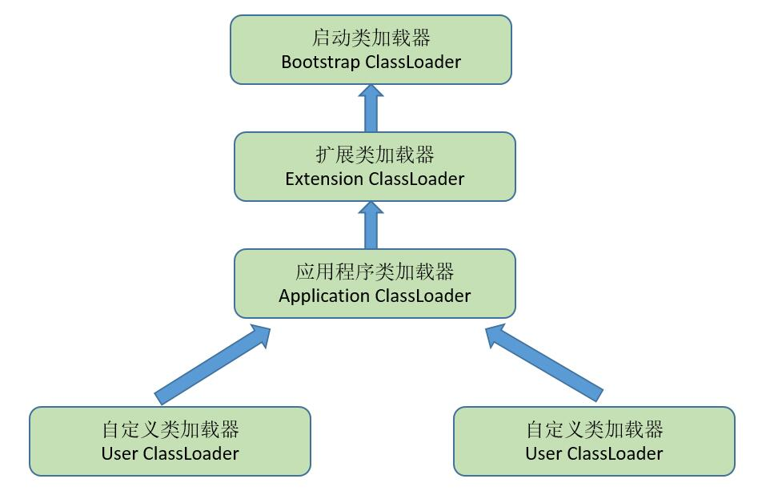
双亲委派
双亲委派模型过程
某个特定的类加载器在接到加载类的请求时，首先将加载任务委托给父类加载器，依次递归，如果父类加载器可以完成类加载任务，就成功返回；只有父类加载器无法完成此加载任务时，才自己去加载。
使用双亲委派模型的好处在于 Java 类随着它的类加载器一起具备了一种带有优先级的层次关系。例如类 java.lang.Object，它存在在rt.jar 中，无论哪一个类加载器要加载这个类，最终都是委派给处于模型最顶端的 Bootstrap ClassLoader 进行加载，因此 Object 类在程序的各种类加载器环境中都是同一个类。相反，如果没有双亲委派模型而是由各个类加载器自行加载的话，如果用户编写了一个 java.lang.Object 的同名类并放在 ClassPath 中，那系统中将会出现多个不同的 Object 类，程序将混乱。因此，如果开发者尝试编写一个与 rt.jar 类库中重名的 Java 类，可以正常编译，但是永远无法被加载运行。
双亲委派模型的系统实现
在 java.lang.ClassLoader 的 loadClass() 方法中，先检查是否已经被加载过，若没有加载则调用父类加载器的 loadClass() 方法，若父加载器为 null 则默认使用启动类加载器作为父加载器。如果父加载失败，则在抛出 ClassNotFoundException 异常后，再调用自己的 findClass() 方法进行加载。
1 | protected synchronized Class<?> loadClass(String name,boolean resolve) throws ClassNotFoundException{ |
注意：双亲委派模型是 Java 设计者推荐给开发者的类加载器的实现方式，并不是强制规定的。大多数的类加载器都遵循这个模型，但是 JDK 中也有较大规模破坏双亲模型的情况，例如线程上下文类加载器（Thread Context ClassLoader），具体可参见周志明著《深入理解Java虚拟机》。
内存模型及线程
锁优化
全局唯一有序 ID
snowflake ，timestamp 加前面，然后后面加上机器 id 等
红黑树
因为HashMap在JDK1.8中数据结构加入了红黑树)
AOP、实现动态代理的方式
Dom4J以及SAX的区别，什么时候用，怎么用
Maven，为什么要用
NIO，怎么使用
动态代理
GC
GC 机制对 JVM 中的内存进行标记，并确定哪些内存需要回收，根据一定的回收策略，自动的回收内存，永不停息的保证 JVM 中的内存空间，防止内存泄露和溢出问题的出现。
内存区域
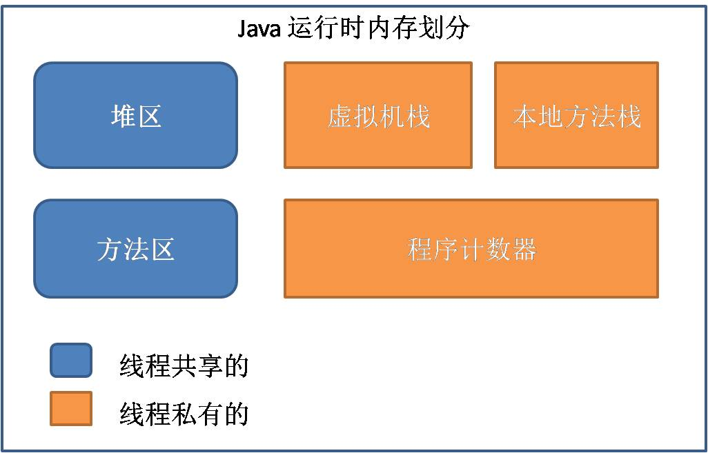
程序计数器（Program Counter Register）
程序计数器是一个比较小的内存区域，用于指示当前线程所执行的字节码执行到了第几行，可以理解为是当前线程的行号指示器。字节码解释器在工作时，会通过改变这个计数器的值来取下一条语句指令。
每个程序计数器只用来记录一个线程的行号，所以它是线程私有的（一个线程就有一个程序计数器）。
- 如果程序执行的是一个 Java 方法，则计数器记录的是正在执行的虚拟机字节码指令地址；
- 如果正在执行的是一个本地（native，由 C 语言编写完成）方法，则计数器的值为 Undefined。
由于程序计数器只是记录当前指令地址，所以不存在内存溢出的情况，因此程序计数器也是所有 JVM 内存区域中唯一一个没有定义 OutOfMemoryError 的区域。
虚拟机栈（JVM Stack）
一个线程的每个方法在执行的同时，都会创建一个栈帧（Statck Frame），栈帧中存储了局部变量表、操作站、动态链接、方法出口等，当方法被调用时，栈帧在 JVM 栈中入栈，当方法执行完成时，栈帧出栈。
局部变量表中存储着方法的相关局部变量，包括各种基本数据类型，对象的引用，返回地址等。其中只有 long 和 double 类型会占用2个局部变量空间（Slot，对于32位机器，一个 Slot 就是 32 个bit），其它都是 1 个 Slot。注意：局部变量表在编译时就已经确定，方法运行所需要分配的空间在栈帧中是完全确定的，在方法的生命周期内都不会改变。
虚拟机栈中定义了两种异常：
- 栈溢出（StatckOverFlowError）：如果线程调用的栈深度大于虚拟机允许的最大深度，则抛出；
- 内存溢出（OutOfMemoryError）：多数 JVM 允许动态扩展虚拟机栈的大小，如果线程一直申请栈，直到内存不足，则抛出。
每个线程对应着一个虚拟机栈，因此虚拟机栈也是线程私有的。
本地方法栈（Native Method Statck）
本地方法栈在作用，运行机制，异常类型等方面都与虚拟机栈相同，唯一的区别是：虚拟机栈用于执行 Java 方法，而本地方法栈用于执行 native 方法，在很多虚拟机中（如 Sun 的 JDK 默认的 HotSpot 虚拟机），会将本地方法栈与虚拟机栈放在一起使用。
本地方法栈也是线程私有的。
堆区（Heap）
堆区是理解 GC 机制最重要的区域。在 JVM 所管理的内存中，堆区最大，是 GC 机制所管理的主要内存区域，堆区由所有线程共享，在虚拟机启动时创建。堆区的存在是为了存储对象实例，原则上讲，所有的对象都在堆区上分配内存（不过现代技术里，也不是这么绝对的，也有栈上直接分配的）。
一般的，根据 JVM 规范规定，堆内存需要在逻辑上是连续的（在物理上不需要），在实现时，可以是固定大小的，也可以是可扩展的，目前主流的虚拟机都是可扩展的。如果在执行垃圾回收之后，仍没有足够的内存分配，也不能再扩展，将会抛出 OutOfMemoryError:Java heap space 异常。
方法区（Method Area）
在 JVM 规范中，方法区被作为堆的一个逻辑部分来对待，事实上，方法区并不是堆（Non-Heap）。不少人的博客中，将 GC 的分代收集机制分为3个代：青年代，老年代，永久代，这些作者将方法区定义为“永久代”，因为对于之前的 HotSpot JVM 的实现方式中，将分代收集的思想扩展到了方法区，并将方法区设计成了永久代。但除了 HotSpot 之外的多数虚拟机，并不将方法区当做永久代，HotSpot 本身也计划取消永久代。本文中主要使用 Oracle JDK6.0，因此仍将使用：永久代 = 方法区，JDK 8 去除了永久代，引入了元空间 Metaspace。
方法区是各个线程共享的区域，用于存储已经被虚拟机加载的final 常量、静态变量、编译器即时编译的代码、类信息（即加载类时需要加载的信息，包括版本、field、方法、接口等）等。
方法区在物理上也不需要连续，可以选择固定大小或可扩展大小，并且方法区比堆还多了一个限制：
可以选择是否执行垃圾收集。一般的，方法区上执行的垃圾收集是很少的，这也是方法区被称为永久代的原因之一（HotSpot），但这也不代表着在方法区上完全没有垃圾收集，其上的垃圾收集主要是针对常量池的内存回收和对已加载类的卸载。
在方法区上进行垃圾收集，条件苛刻而且相当困难，效果也不令人满意，所以一般不做太多考虑，可以留作以后进一步深入研究时使用。
方法区定义了 OutOfMemoryError:PermGen space 异常，在内存不足时抛出。
运行时常量池（Runtime Constant Pool）：
- 方法区的一部分，用于存储编译期就生成的字面常量、符号引用、翻译出来的直接引用（符号引用就是编码是用字符串表示某个变量、接口的位置，直接引用就是根据符号引用翻译出来的地址，将在类链接阶段完成翻译）；
- 运行时常量池除了存储编译期常量外，也可以存储在运行时间产生的常量（比如 String 类的 intern() 方法，作用是 String 维护了一个常量池，如果调用的字符“abc”已经在常量池中，则返回池中的字符串地址，否则，新建一个常量加入池中，并返回地址）。
直接内存（Direct Memory）
直接内存并不是 JVM 管理的内存，是 JVM 以外的机器内存（比如机器有4G的内存，JVM 占用了1G，则其余的3G就是直接内存）。JDK 中有一种基于通道（Channel）和缓冲区（Buffer）的内存分配方式，将由 C 语言实现的 native 函数库分配在直接内存中，用存储在 JVM 堆中的 DirectByteBuffer 来引用。由于直接内存受本机器内存的限制，所以可能出现 OutOfMemoryError 的异常。
Java对象的访问方式
Java 的引用访问涉及到3个内存区域：JVM 栈，堆，方法区。
举个栗子：
1 | Object obj = new Object(); |
- obj 表示一个本地引用，存储在 JVM 栈的本地变量表中；
- new 出来的 Object 作为实例对象数据存储在堆中；
- 堆中还记录了 Object 类的类型信息（接口、方法、field、对象类型等）的地址，这些地址所执行的数据存储在方法区中。
在 JVM 规范中，对于通过引用类型引用访问具体对象的方式并未做规定，目前主流的实现方式主要有两种：
通过句柄访问
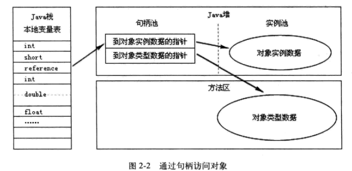
通过句柄访问的实现方式中，JVM 堆中会专门有一块区域用来作为句柄池，存储相关句柄所执行的实例数据地址（包括在堆中地址和在方法区中的地址）。这种实现方法由于用句柄表示地址，因此十分稳定。
通过直接指针访问
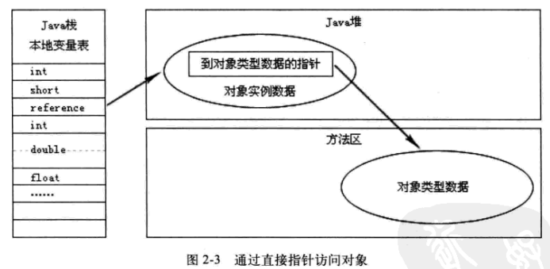
通过直接指针访问的方式中，引用中存储的就是对象在堆中的实际地址，在堆中存储的对象信息中包含了在方法区中的相应类型数据。这种方法最大的优势是速度快，在 HotSpot 虚拟机中用的就是这种方式。
Java内存分配机制
这里所说的内存分配，主要指的是在堆上的分配，一般的，对象的内存分配都是在堆上进行，但现代技术也支持将对象拆成标量类型（标量类型即原子类型，表示单个值，可以是基本类型或 String 等），然后在栈上分配，在栈上分配的很少见，这里不考虑。
Java 内存分配和回收的机制概括起来就是：分代分配，分代回收。
根据存活的时间对象被分为：新生代（Young Generation）、老年代（Old Generation）、永久代（Permanent Generation）。
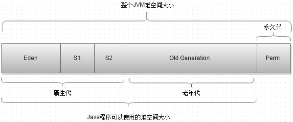
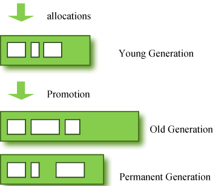
新生代
对象被创建时，内存的分配首先发生在新生代（大对象可以直接被创建在老年代），大部分的对象在创建后很快就不再使用，因此很快变得不可达，于是被新生代的 GC 机制清理掉（IBM的研究表明，98%的对象都是很快消亡的），这个 GC 机制被称为 Minor GC 或叫Young GC。注意：Minor GC 并不代表新生代内存不足，它只是表示在 Eden 区上的 GC。
新生代分为3个区域：
- Eden 区（伊甸园，亚当和夏娃偷吃禁果生娃娃的地方，用来表示内存首次分配的区域，再贴切不过）
- 两个大小相等的存活区（Survivor 0 、Survivor 1）。
新生代内存分配过程：
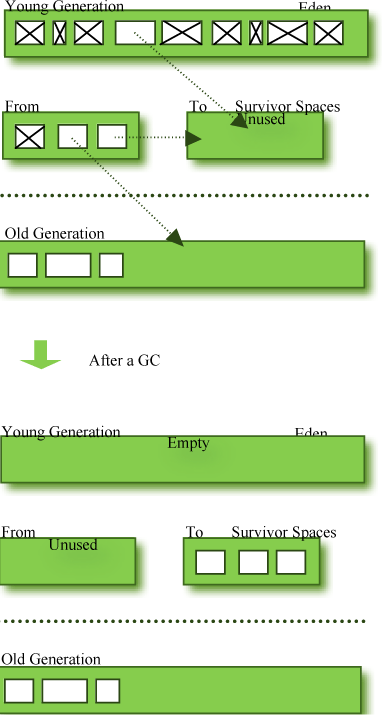
- 绝大多数刚创建的对象会被分配在 Eden 区，其中的大多数对象很快就会消亡。Eden 区是连续的内存空间，因此在其上分配内存极快；
- 当 Eden 区满的时候，将执行 Minor GC，清掉消亡的对象，并将剩余的对象复制到存活区 Survivor0（此时，Survivor1 空，因为两个 Survivor 总有一个为空）；
- 下次 Eden 区满了，再执行一次 Minor GC，将消亡的对象清掉，将存活的对象复制到 Survivor1 中，然后清空 Eden 区；
- 将 Survivor0 中消亡的对象清理掉，将其中可以晋级的对象晋级到 Old 区，将存活的对象也复制到 Survivor1 区，然后清空 Survivor0 区；
- 当两个存活区切换了几次之后（HotSpot 虚拟机默认15次，用
-XX:MaxTenuringThreshold控制，大于该值进入老年代，但这只是个最大值，并不代表一定是这个值），仍然存活的对象（其实只有一小部分，比如我们自己定义的对象），将被复制到老年代。
从上面的过程可以看出，Eden 区是连续的空间，且 Survivor 总有一个为空。经过一次 GC 和复制，一个 Survivor 中保存着当前还活着的对象，而 Eden 区和另一个 Survivor 区的内容都不再需要了，可以直接清空，到下一次 GC 时，两个 Survivor 的角色再互换。因此，这种方式分配内存和清理内存的效率都极高，这种垃圾回收的方式就是著名的“停止-复制（Stop-and-copy）”清理法（将 Eden 区和一个 Survivor 中仍然存活的对象复制到另一个 Survivor 中）。不过，它也只在新生代下高效，如果在老年代仍然采用这种方式，则不再高效。
在 Eden 区，HotSpot 虚拟机使用了两种技术来加快内存分配：
- bump-the-pointer：由于 Eden 区是连续的，因此改技术的核心就是跟踪最后创建的一个对象，在对象创建时，只需要检查最后一个对象后面是否有足够的内存即可，从而大大加快内存分配速度；
- TLAB（Thread-Local Allocation Buffers）：该技术是对于多线程而言的，将 Eden 区分为若干段，每个线程使用独立的一段，避免相互影响。TLAB 结合 bump-the-pointer 技术，将保证每个线程都使用 Eden 区的一段，并快速地分配内存。
老年代（Old Generation）
对象如果在新生代存活了足够长的时间而没有被清理掉（即在几次 Young GC 后存活了下来），则会被复制到老年代，老年代的空间一般比新生代大，能存放更多的对象，在老年代上发生的 GC 次数也比新生代少。当老年代内存不足时，将执行 Major GC，也叫 Full GC。可以使用 -XX:+UseAdaptiveSizePolicy 开关来控制是否采用动态控制策略，如果动态控制，则动态调整堆中各个区域的大小以及进入老年代的年龄。
如果对象比较大（比如长字符串或大数组），新生代空间不足，则大对象会直接分配到老年代上（大对象可能触发提前 GC，应少用，更应避免使用短命的大对象）。用 -XX:PretenureSizeThreshold 来控制直接升入老年代的对象大小，大于这个值的对象会直接分配在老年代上。
可能存在老年代对象引用新生代对象的情况，如果需要执行 Young GC，则可能需要查询整个老年代以确定是否可以清理回收，这显然是低效的。解决的方法是，老年代中维护一个 512 byte 的块 —— card table，所有老年代对象引用新生代对象的记录都记录在这里。Young GC 时，只要查这里即可，不用再去查全部老年代，因此性能大大提高。
GC 机制
GC 机制的基本算法：分代收集。
新生代
上一节，已经介绍了新生代的主要垃圾回收方法，在新生代中，使用“停止-复制”算法进行清理，将新生代内存分为两部分：Eden 区较大；Survivor 存活区比较小，并被划分为两个等量的部分。每次进行清理时，将 Eden 区和一个 Survivor 中仍然存活的对象拷贝到另一个 Survivor 中，然后清理掉 Eden 和刚才的 Survivor。
停止复制算法中，用来复制的两部分并不总是相等的（传统的停止复制算法两部分内存相等，但新生代中使用1个大的 Eden 区和2个小的 Survivor 区来避免这个问题）
由于绝大部分的对象都是短命的，甚至存活不到 Survivor 中，所以 Eden 区比 Survivor 大，HotSpot默认是 8:1，即分别占新生代的80%，10%，10%。如果一次回收中，Survivor + Eden 中存活下来的内存超过了10%，则需要将一部分对象分配到老年代。用 -XX:SurvivorRatio 参数来配置 Eden 区域 Survivor 区的容量比值，默认是8，代表 Eden：Survivor1：Survivor2 = 8:1:1。
老年代
老年代存储的对象比新生代多得多，而且不乏大对象，对老年代进行内存清理时，如果使用停止-复制算法，则相当低效。一般，老年代用的算法是标记-整理算法：标记出仍然存活的对象（存在引用的），将所有存活的对象向一端移动，以保证内存的连续。
在发生 Minor GC 时，虚拟机会检查每次晋升进入老年代的大小是否大于老年代的剩余空间大小：
- 大于：直接触发一次 Full GC。
- 小于：查看是否设置了
-XX:+HandlePromotionFailure（允许担保失败）：如果允许，则只会进行 Minor GC，此时可以容忍内存分配失败；如果不允许，则仍然进行 Full GC。这表示如果设置了不允许担保失败，则触发 Minor GC 就会同时触发 Full GC，哪怕老年代还有很多内存，所以最好不要这样做。
方法区（永久代）
永久代的回收有两种：
- 常量池中的常量：没有引用了就可以被回收。
- 无用的类信息：必须保证３点：类的所有实例都已经被回收、加载类的 ClassLoader 已经被回收、类对象的 Class 对象没有被引用（即没有通过反射引用该类的地方）。
垃圾收集器
在 GC 机制中，起重要作用的是垃圾收集器，垃圾收集器是 GC 的具体实现，JVM 规范中对于垃圾收集器没有任何规定，所以不同厂商实现的垃圾收集器各不相同，HotSpot 1.6 版使用的垃圾收集器如下图（两个收集器之间有连线，说明它们可以配合使用）：
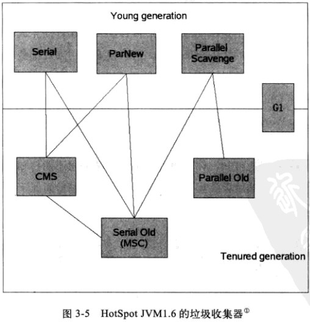
首先要明确一点，在新生代采用的停止复制算法中，“停止（stop-the-world）”的意义是在回收内存时，需要暂停其他所有线程的执行。这个是很低效的，现在的各种新生代收集器越来越优化这一点，但仍然只是将停止的时间变短，并未彻底取消停止。
Serial 收集器：
- 新生代收集器
- 停止复制算法
- 单线程串行 GC，暂停其它工作线程
-XX:+UseSerialGC开启 Serial + Serial Old 进行内存回收（这也是虚拟机在 Client 模式下运行的默认值）
ParNew 收集器：
- 新生代收集器
- 停止复制算法
- 多个线程并行 GC，暂停其它工作线程，Serial 收集器的多线程版，缩短垃圾收集时间
-XX:+UseParNewGC开启 ParNew + Serial Old 进行内存回收-XX:ParallelGCThreads设置执行内存回收的线程数
Parallel Scavenge 收集器：
- 新生代收集器
- 停止复制算法
- 关注 CPU 吞吐量，即运行用户代码的时间/总时间，比如：JVM 运行100分钟，其中运行用户代码99分钟，垃圾收集1分钟，则吞吐量是99%，能最高效率地利用CPU，适合运行后台运算
-XX:+UseParallelGC开启 Parallel Scavenge + Serial Old 进行内存回收（Server 模式下的默认设置）-XX:GCTimeRatio设置用户执行时间占总时间的比例，默认99，即1%的时间用来进行垃圾回收-XX:MaxGCPauseMillis设置 GC 的最大停顿时间（该参数只对 Parallel Scavenge 有效）-XX:+UseAdaptiveSizePolicy设置自适应调节策略，如自动调整Eden/Survivor比例，老年代对象年龄，新生代大小等（该参数在 ParNew 下没有）。
Serial Old 收集器：
- 老年代收集器
- 标记整理算法：Sweep（清理）和 Compact（压缩）。Sweep 是将废弃的对象清掉，只留幸存的对象；Compact 是移动对象将空间填满保证内存分为2块：一块全是对象、一块空闲
- 单线程串行 GC，暂停其它工作线程
- JDK 1.5 前，Serial Old + ParallelScavenge 进行内存回收。
Parallel Old 收集器：
- 老年代收集器
- 标记整理算法：Summary（汇总）和 Compact（压缩）。Summary 是将幸存的对象复制到预先准备好的区域，而不是像 Sweep 那样清理废弃的对象
- 多线程并行 GC，暂停其它工作线程
- 有利于多核计算
- Parallel Old 出现后（JDK 1.6）与 Parallel Scavenge 配合有很好的效果，充分体现 Parallel Scavenge 收集器吞吐量优先的效果
-XX:+UseParallelOldGC开启 Parallel Scavenge + Parallel Old 进行内存回收
CMS（Concurrent Mark Sweep）收集器：
- 老年代收集器
- 关注最短回收停顿时间（即缩短垃圾回收的时间）
- 标记清除算法
- 并发收集（用户线程可以和 GC 线程同时工作），停顿小
-XX:+UseConcMarkSweepGC开启 ParNew + CMS + Serial Old 进行内存回收，优先使用 ParNew + CMS，当用户线程内存不足时，由备用方案 Serial Old 收集。- 执行过程：（2次标记，1次预清理，1次重新标记，再1次清除）
- 初始标记（CMS-initial-mark）
- 并发标记（CMS-concurrent-mark）
- 预清理（CMS-concurrent-preclean）
- 可控预清理（CMS-concurrent-abortable-preclean）
- 重新标记（CMS-remark）
- 并发清除（CMS-concurrent-sweep）
- 并发重设状态等待下次 CMS 的触发（CMS-concurrent-reset）
G1（Garbage First）收集器：
- 堆被划分成许多个连续的区域（region）
- G1 算法
- 支持很大的堆，高吞吐量
- 支持多 CPU 和垃圾回收线程
- 在主线程暂停的情况下，使用并行收集
- 在主线程运行的情况下，使用并发收集
- 实时目标：可配置在N毫秒内最多只占用M毫秒的时间进行垃圾回收
–XX:+UseG1GC开启 G1 进行内存回收
注意并发（Concurrent）和并行（Parallel）的区别：
- 并发是指用户线程与 GC 线程同时执行（不一定是并行，可能交替，但总体上是在同时执行的），不需要停顿用户线程（其实在 CMS 中用户线程还是需要停顿的，只是非常短，GC 线程在另一个 CPU上 执行）；
- 并行收集是指多个 GC 线程并行工作，但此时用户线程是暂停的。
Serial 串行，Parallel 并行，CMS 并发，G1 既可以并行也可以并发。
收集器搭配
在介绍了常用的配置参数之后，我们将开始真正的JVM实操征程，首先，我们要为应用程序选择一个合适的垃圾收集器组合，本节请参考《Java系列笔记(3) - Java 内存区域和GC机制》一文中的“垃圾收集器”一节，及上节中的行为参数。
这里需要再次引用这幅图（图来源于《深入理解Java虚拟机：JVM高级特效与最佳实现》，图中两个收集器之间有连线，说明它们可以配合使用）：
Serial收集器： Serial收集器是在client模式下默认的新生代收集器，其收集效率大约是100M左右的内存需要几十到100多毫秒；在client模式下，收集桌面应用的内存垃圾，基本上不影响用户体验。所以，一般的Java桌面应用中，直接使用Serial收集器（不需要配置参数，用默认即可）。
ParNew收集器：Serial收集器的多线程版本，这种收集器默认开通的线程数与CPU数量相同，-XX:ParallelGCThreads可以用来设置开通的线程数。
可以与CMS收集器配合使用，事实上用-XX:+UseConcMarkSweepGC选择使用CMS收集器时，默认使用的就是ParNew收集器，所以不需要额外设置-XX:+UseParNewGC，设置了也不会冲突，因为会将ParNew+Serial Old作为一个备选方案；
如果单独使用-XX:+UseParNewGC参数，则选择的是ParNew+Serial Old收集器组合收集器。
一般情况下，在server模式下，如果选择CMS收集器，则优先选择ParNew收集器。
Parallel Scavenge收集器：关注的是吞吐量（关于吞吐量的含义见上一篇博客），可以这么理解，关注吞吐量，意味着强调任务更快的完成，而如CMS等关注停顿时间短的收集器，强调的是用户交互体验。
在需要关注吞吐量的场合，比如数据运算服务器等，就可以使用Parallel Scavenge收集器。
老年代收集器如下：
Serial Old收集器：在1.5版本及以前可以与 Parallel Scavenge结合使用（事实上，也是当时Parallel Scavenge唯一能用的版本），另外就是在使用CMS收集器时的备用方案，发生 Concurrent Mode Failure时使用。
如果是单独使用，Serial Old一般用在client模式中。
Parallel Old收集器：在1.6版本之后，与 Parallel Scavenge结合使用，以更好的贯彻吞吐量优先的思想，如果是关注吞吐量的服务器，建议使用Parallel Scavenge + Parallel Old 收集器。
CMS收集器：这是当前阶段使用很广的一种收集器，国内很多大的互联网公司线上服务器都使用这种垃圾收集器（http://blog.csdn.net/wisgood/article/details/17067203），笔者公司的收集器也是这种，CMS收集器以获取最短回收停顿时间为目标，非常适合对用户响应比较高的B/S架构服务器。
CMSIncrementalMode： CMS收集器变种，属增量式垃圾收集器，在并发标记和并发清理时交替运行垃圾收集器和用户线程。
G1 收集器：面向服务器端应用的垃圾收集器，计划未来替代CMS收集器。
一般来说，如果是Java桌面应用，建议采用Serial+Serial Old收集器组合，即：-XX:+UseSerialGC（-client下的默认参数）
在开发/测试环境，可以采用默认参数，即采用Parallel Scavenge+Serial Old收集器组合，即：-XX:+UseParallelGC（-server下的默认参数）
在线上运算优先的环境，建议采用Parallel Scavenge+Serial Old收集器组合，即：-XX:+UseParallelGC
在线上服务响应优先的环境，建议采用ParNew+CMS+Serial Old收集器组合，即：-XX:+UseConcMarkSweepGC
另外在选择了垃圾收集器组合之后，还要配置一些辅助参数，以保证收集器可以更好的工作。关于这些参数，请在http://kenwublog.com/docs/java6-jvm-options-chinese-edition.htm中查询其意义和用法，如：
选用了ParNew收集器，你可能需要配置4个参数： -XX:SurvivorRatio, -XX:PretenureSizeThreshold, -XX:+HandlePromotionFailure,-XX:MaxTenuringThreshold；
选用了 Parallel Scavenge收集器，你可能需要配置3个参数： -XX:MaxGCPauseMillis，-XX:GCTimeRatio， -XX:+UseAdaptiveSizePolicy ；
选用了CMS收集器，你可能需要配置3个参数： -XX:CMSInitiatingOccupancyFraction， -XX:+UseCMSCompactAtFullCollection, -XX:CMSFullGCsBeforeCompaction；
JVM 调优参数
性能参数:往往用来定义内存分配的大小和比例。
| 参数及其默认值 | 描述 |
|---|---|
| -XX:NewSize=2.125m | 新生代对象生成时占用内存的默认值 |
| -XX:MaxNewSize=size | 新生成对象能占用内存的最大值 |
| -XX:MaxPermSize=64m | 方法区所能占用的最大内存（非堆内存） |
| -XX:PermSize=64m | 方法区分配的初始内存 |
| -XX:MaxTenuringThreshold=15 | 对象在新生代存活区切换的次数（坚持过MinorGC的次数，每坚持过一次，该值就增加1），大于该值会进入老年代 |
| -XX:MaxHeapFreeRatio=70 | GC后java堆中空闲量占的最大比例，大于该值，则堆内存会减少 |
| -XX:MinHeapFreeRatio=40 | GC后java堆中空闲量占的最小比例，小于该值，则堆内存会增加 |
| -XX:NewRatio=2 | 新生代内存容量与老生代内存容量的比例 |
| -XX:ReservedCodeCacheSize=32m | 保留代码占用的内存容量 |
| -XX:ThreadStackSize=512 | 设置线程栈大小，若为0则使用系统默认值 |
| -XX:LargePageSizeInBytes=4m | 设置用于Java堆的大页面尺寸 |
| -XX:PretenureSizeThreshold=size | 大于该值的对象直接晋升入老年代（这种对象少用为好） |
| -XX:SurvivorRatio=8 | Eden区域Survivor区的容量比值，如默认值为8，代表Eden：Survivor1：Survivor2=8:1:1 |
常用的行为参数：用来选择使用什么样的垃圾收集器组合，以及控制运行过程中的GC策略等。
| 参数及其默认值 | 描述 |
|---|---|
| -XX:-UseSerialGC | 启用串行GC，即采用Serial+Serial Old模式 |
| -XX:-UseParallelGC | 启用并行GC，即采用Parallel Scavenge+Serial Old收集器组合（-Server模式下的默认组合） |
| -XX:GCTimeRatio=99 | 设置用户执行时间占总时间的比例（默认值99，即1%的时间用于GC） |
| -XX:MaxGCPauseMillis=time | 设置GC的最大停顿时间（这个参数只对Parallel Scavenge有效） |
| -XX:+UseParNewGC | 使用ParNew+Serial Old收集器组合 |
| -XX:ParallelGCThreads | 设置执行内存回收的线程数，在+UseParNewGC的情况下使用 |
| -XX:+UseParallelOldGC | 使用Parallel Scavenge +Parallel Old组合收集器 |
| -XX:+UseConcMarkSweepGC | 使用ParNew+CMS+Serial Old组合并发收集，优先使用ParNew+CMS，当用户线程内存不足时，采用备用方案Serial Old收集 |
| -XX:-DisableExplicitGC | 禁止调用System.gc()；但jvm的gc仍然有效 |
| -XX:+ScavengeBeforeFullGC | 新生代GC优先于Full GC执行 |
常用的调试参数：用于监控和打印GC的信息。
| 参数及其默认值 | 描述 |
|---|---|
| -XX:-CITime | 打印消耗在JIT编译的时间 |
| -XX:ErrorFile=./hs_err_pid | 保存错误日志或者数据到文件中 |
| -XX:-ExtendedDTraceProbes | 开启solaris特有的dtrace探针 |
| -XX:HeapDumpPath=./java_pid | 指定导出堆信息时的路径或文件名 |
| -XX:-HeapDumpOnOutOfMemoryError | 当首次遭遇OOM时导出此时堆中相关信息 |
| -XX:OnError=” | 出现致命ERROR之后运行自定义命令 |
| -XX:OnOutOfMemoryError=” | 当首次遭遇OOM时执行自定义命令 |
| -XX:-PrintClassHistogram | 遇到Ctrl-Break后打印类实例的柱状信息，与jmap -histo功能相同 |
| -XX:-PrintConcurrentLocks | 遇到Ctrl-Break后打印并发锁的相关信息，与jstack -l功能相同 |
| -XX:-PrintCommandLineFlags | 打印在命令行中出现过的标记 |
| -XX:-PrintCompilation | 当一个方法被编译时打印相关信息 |
| -XX:-PrintGC | 每次GC时打印相关信息 |
| -XX:-PrintGC Details | 每次GC时打印详细信息 |
| -XX:-PrintGCTimeStamps | 打印每次GC的时间戳 |
| -XX:-TraceClassLoading | 跟踪类的加载信息 |
| -XX:-TraceClassLoadingPreorder | 跟踪被引用到的所有类的加载信息 |
| -XX:-TraceClassResolution | 跟踪常量池 |
| -XX:-TraceClassUnloading | 跟踪类的卸载信息 |
| -XX:-TraceLoaderConstraints | 跟踪类加载器约束的相关信息 |
启动内存分配
具体配置多少？设置小了，频繁 GC（甚至内存溢出），设置大了，内存浪费。结合前面对于内存区域和其作用的学习，建议：
-XX:PermSize：尽量比 -XX:MaxPermSize 小，-XX:MaxPermSize >= 2 * -XX:PermSize, -XX:PermSize > 64m，一般对于4G内存的机器，-XX:MaxPermSize 不会超过256m。
-Xms = -Xmx（线上 Server 模式）：以防止抖动，大小受操作系统和内存大小限制，如果是32位系统，则一般设置为1g~2g（假设有4g内存），在64位系统上，没有限制，不过一般为机器最大内存的一半左右。
-Xmn：在开发环境下，-XX:NewSize 和 -XX:MaxNewSize 设置新生代的大小；在生产环境下，建议只设置 -Xmn，并且大小是 -Xms 的1/2左右，不要过大或过小，过大导致老年代变小，频繁 Full GC，过小导致 minor GC 频繁。如果不设置 -Xmn，可以设置 -XX:NewRatio=2，效果一样。
-Xss：默认值即可。
-XX:SurvivorRatio：设置8-10左右，推荐设置为10，即 Survivor 区的大小是 Eden 区的1/10，因为对于普通程序，一次 Minor GC 后，至少98%-99%的对象，都会消亡，该设置能使 Survivor 区容纳下10-20次的 Minor GC 才满，然后再进入老年代，这个与 -XX:MaxTenuringThreshold 的默认值15次也相匹配的。如果设置过小，会导致本来能通过 Minor GC 回收掉的对象提前进入老年代，产生不必要的 Full GC；如果设置过大，会导致 Eden 区相应的被压缩。
-XX:MaxTenuringThreshold：默认为15，也就是说，经过15次 Survivor 轮换（即15次 Minor GC）就进入老年代，如果设置过小，则新生代对象在 Survivor 中存活的时间减小，提前进入年老代，对于老年代比较多的应用，可以提高效率。如果设置过大，则新生代对象会在 Survivor 区进行多次复制，这样可以增加对象在新生代的存活时间，增加在新生代即被回收的概率。注意：设置了该值，并不表示对象一定会在新生代存活15次才被晋升进入老年代，它只是一个最大值，事实上，存在一个动态计算机制，计算每次晋入老年代的阈值，取阈值以 MaxTenuringThreshold 中较小的一个为准。
-XX:PretenureSizeThreshold：默认值即可。
监控工具和方法
在 JVM 运行的过程中，为保证其稳定、高效，或在出现 GC 问题时分析问题原因，我们需要对 GC 进行监控。所谓监控，其实就是分析清楚当前 GC 的情况。其目的是鉴别 JVM 是否在高效的进行垃圾回收，以及有没有必要进行调优。
通过监控GC，我们可以搞清楚很多问题，如：
- Minor GC 和 Full GC的频率；
- 执行一次 GC 所消耗的时间；
- 新生代的对象何时被移到老生代以及花费了多少时间；
- 每次 GC 中，其它线程暂停（Stop the world）的时间；
- 每次 GC 的效果如何，是否不理想。
监控工具：
jps
jps命令用于查询正在运行的 JVM 进程。
| 常用参数 | 描述 |
|---|---|
| -q | 只输出 LVMID，省略主类的名称 |
| -m | 输出虚拟机进程启动时传给主类 main() 函数的参数 |
| -l | 输出主类的全类名，如果进程执行的是 jar 包，输出 jar 路径 |
| -v | 输出虚拟机进程启动时 JVM 参数 |
命令格式：jps [option] [hostid]
栗子：
$ jps -l
19688 sun.tools.jps.Jps
19610 com.zoctan.api.Application
上面的 vid 为 19610 的 api.Application 进程在提供 web 服务。
jstat
jstat 可以实时显示本地或远程 JVM 进程中类装载、内存、垃圾收集、JIT 编译等数据（如果要显示远程JVM信息，需要远程主机开启 RMI 支持）。如果在服务启动时没有指定启动参数 -verbose:gc，则可以用 jstat 实时查看 GC 情况。
| 常用参数 | 描述 |
|---|---|
| -class | 监视类装载、卸载数量、总空间及类装载所耗费的时间 |
| -gc | 监听堆状况，包括 Eden 区、两个 Survivor 区、老年代、永久代等的容量，已用空间、GC 时间合计等 |
| -gccapacity | 监视内容与 -gc 基本相同，但输出主要关注堆的各个区域使用到的最大和最小空间 |
| -gcutil | 监视内容与 -gc 基本相同，但输出主要关注已使用空间占总空间的百分比 |
| -gccause | 与 -gcutil 功能一样，但是会额外输出导致上一次 GC 产生的原因 |
| -gcnew | 监视新生代 GC 状况 |
| -gcnewcapacity | 监视内同与 -gcnew 基本相同，输出主要关注使用到的最大和最小空间 |
| -gcold | 监视老年代 GC 情况 |
| -gcoldcapacity | 监视内同与 -gcold 基本相同，输出主要关注使用到的最大和最小空间 |
| -gcpermcapacity | 输出永久代使用到最大和最小空间 |
| -compiler | 输出 JIT 编译器编译过的方法、耗时等信息 |
| -printcompilation | 输出已经被 JIT 编译的方法 |
命令格式：jstat [option vmid [interval[s|ms] [count]]]
jstat 可以监控远程机器，命令格式中 VMID 和 LVMID 说明：
- 如果是本地虚拟机进程，VMID 和 LVMID 是一致的；
- 如果是远程虚拟机进程，那么 VMID 格式是: [protocol:][//]lvmid[@hostname[:port]/servername]，如果省略 interval 和 count，则只查询一次。
栗子：搜集 vid 为 19600 的 Java 进程的整体 GC 状态，每1000ms收集一次，共收集3次。
$ jstat -gc 19600 1000 3
S0C S1C S0U S1U EC EU OC OU MC MU CCSC CCSU YGC YGCT FGC FGCT GCT
7680.0 7680.0 4386.2 0.0 48640.0 17858.7 128512.0 88.0 19456.0 18871.3 2304.0 2164.6 2 0.018 0 0.000 0.018
7680.0 7680.0 4386.2 0.0 48640.0 17858.7 128512.0 88.0 19456.0 18871.3 2304.0 2164.6 2 0.018 0 0.000 0.018
7680.0 7680.0 4386.2 0.0 48640.0 17858.7 128512.0 88.0 19456.0 18871.3 2304.0 2164.6 2 0.018 0 0.000 0.018
| XXXC：该区容量，XXXU：该区使用量 | 描述 |
|---|---|
| S0C | Survivor0区容量（Survivor1区相同，略） |
| S0U | Survivor0区已使用 |
| EC | Eden 区容量 |
| EU | Eden 区已使用 |
| OC | 老年代容量 |
| OU | 老年代已使用 |
| PC | Perm 容量 |
| PU | Perm 区已使用 |
| YGC | Young GC（Minor GC）次数 |
| YGCT | Young GC 总耗时 |
| FGC | Full GC 次数 |
| FGCT | Full GC 总耗时 |
| GCT | GC 总耗时 |
-gcutil 查看内存：
$ jstat -gcutil 19600 1000 3 1 ↵
S0 S1 E O M CCS YGC YGCT FGC FGCT GCT
57.11 0.00 36.72 0.07 96.99 93.95 2 0.018 0 0.000 0.018
57.11 0.00 36.72 0.07 96.99 93.95 2 0.018 0 0.000 0.018
57.11 0.00 36.72 0.07 96.99 93.95 2 0.018 0 0.000 0.018
各列与用 gc 参数时基本一致，不同的是这里显示的是已占用的百分比，如 S0 为57.11，代表着 S0 区已使用了57.11%。
jinfo
jinfo 用于查询当前运行的 JVM 属性和参数的值。
| 常用参数 | 描述 | |
|---|---|---|
| -flag | 显示未被显示指定的参数的系统默认值 | |
| -flag | [+ | -]name或 -flag name=value: 修改部分参数 |
| -sysprops | 打印虚拟机进程的 System.getProperties() |
命令格式：jinfo [option] pid
jmap
jmap 用于显示当前堆和永久代的详细信息（如当前使用的收集器，当前的空间使用率等）
| 常用参数 | 描述 |
|---|---|
| -dump | 生成堆转储快照 |
| -heap | 显示堆详细信息(只在 Linux/Solaris 下有效) |
| -F | 当虚拟机进程对 -dump 选项没有响应时，可使用这个选项强制生成dump快照(只在 Linux/Solaris 下有效) |
| -finalizerinfo | 显示在 F-Queue 中等待 Finalizer 线程执行 finalize 方法的对象(只在 Linux/Solaris 下有效) |
| -histo | 显示堆中对象统计信息 |
| -permstat | 以 ClassLoader 为统计口径显示永久代内存状态(只在 Linux/Solaris 下有效) |
命令格式：jmap [option] vmid
其中前面3个参数最重要，如：
查看对详细信息：sudo jmap -heap 309
生成dump文件： sudo jmap -dump:file=./test.prof 309
部分用户没有权限时，采用admin用户：sudo -u admin -H jmap -dump:format=b,file=文件名.hprof pid
查看当前堆中对象统计信息：sudo jmap -histo 309：该命令显示3列，分别为对象数量，对象大小，对象名称，通过该命令可以查看是否内存中有大对象；
有的用户可能没有jmap权限：sudo -u admin -H jmap -histo 309 | less
jhat
jhat 用于分析使用 jmap 生成的 dump 文件，是 JDK 自带的工具。
命令格式：jhat -J -Xmx512m [file]
jstack
jstack 用于生成当前 JVM 的所有线程快照，线程快照是虚拟机每一条线程正在执行的方法,目的是定位线程出现长时间停顿的原因。
| 常用参数 | 描述 |
|---|---|
| -F | 当正常输出的请求不被响应时，强制输出线程堆栈 |
| -l | 除堆栈外，显示关于锁的附加信息 |
| -m | 如果调用到本地方法的话，可以显示 C/C++ 的堆栈 |
命令格式：jstack [option] vmid
调优方法
在调优之前，需要记住下面的原则：
- 多数的 Java 应用不需要在服务器上进行 GC 优化；
- 多数导致 GC 问题的 Java 应用，都不是因为我们参数设置错误，而是代码问题；
- 在应用上线之前，先考虑将机器的 JVM 参数设置到最优（最适合）；
- 减少创建对象的数量；
- 减少使用全局变量和大对象；
- GC 优化是到最后不得已才采用的手段；
- 在实际使用中，分析 GC 情况优化代码比优化 GC 参数要多得多。
GC 优化的目的：
- 将转移到老年代的对象数量降低到最小；
- 减少 Full GC 的执行时间。
为了达到上面的目的，需要：
- 减少使用全局变量和大对象；
- 调整新生代的大小到最合适；
- 设置老年代的大小为最合适；
- 选择合适的 GC 收集器。
什么才算合适，可以参考上面“收集器搭配”和“启动内存分配”两节建议。实际操作中，可以将两台机器分别设置成不同的 GC 参数，并且进行对比，选用那些确实提高了性能或减少了 GC 时间的参数。
真正熟练的使用 GC 调优，是建立在多次进行 GC 监控和调优的实战经验上的，进行监控和调优的一般步骤为：
- 监控GC的状态
- 分析结果，判断是否需要优化
- 调整GC类型和内存分配
- 不断的分析和调整
- 全面应用参数
监控GC的状态
使用各种 JVM 工具，查看当前日志，分析当前 JVM 参数设置，并且分析当前堆内存快照和 GC 日志，根据实际的各区域内存划分和 GC 执行时间，觉得是否进行优化。
分析结果，判断是否需要优化
如果各项参数设置合理，系统没有超时日志出现，GC 频率不高，GC 耗时不高，那么没有必要进行 GC 优化；如果 GC 时间超过1-3秒，或者频繁 GC，则必须优化。
注：如果满足下面的指标，则一般不需要优GC：
- Minor GC 执行时间不到50ms；
- Minor GC 执行不频繁，约10秒一次；
- Full GC 执行时间不到1s；
- Full GC 执行频率不算频繁，不低于10分钟1次。
调整GC类型和内存分配
如果内存分配过大或过小，或者采用的GC收集器比较慢，则应该优先调整这些参数，并且先找1台或几台机器进行beta，然后比较优化过的机器和没有优化的机器的性能对比，并有针对性的做出最后选择。
不断的分析和调整
通过不断的试验和试错，分析并找到最合适的参数。
全面应用参数
如果找到了最合适的参数，则将这些参数应用到所有服务器，并进行后续跟踪。
调优实例
实例1：
原作者发现部分开发测试机器出现异常：java.lang.OutOfMemoryError: GC overhead limit exceeded，这个异常表示：GC 为了释放很小的空间却耗费了太多的时间，其原因一般有两个：堆太小，有死循环或大对象。
因为这个应用有在线上运行，所以首先排除第2个原因，如果应用本身有问题，线上早就挂了，所以怀疑开发测试机器中堆设置太小。
使用 ps -ef | grep java 查看发现：-Xms768m -Xmx768m -XX:NewSize=320m -XX:MaxNewSize=320m
该应用的堆区设置只有768m，而机器内存有2G，机器上只跑这一个 Java 应用，没有其他需要占用内存的地方。另外，这个应用比较大，需要占用的内存也比较多。
通过上面的情况判断，只需要改变堆中各区域的大小设置即可，于是改成下面的情况：-Xms1280m -Xmx1280m -XX:NewSize=500m -XX:MaxNewSize=500m
跟踪运行情况发现，相关异常没有再出现。
实例2：（http://www.360doc.com/content/13/0305/10/15643_269388816.shtml）
一个服务系统，经常出现卡顿，分析原因，发现 Full GC 时间太长：
$jstat -gcutil:
S0 S1 E O P YGC YGCT FGC FGCT GCT
12.16 0.00 5.18 63.78 20.32 54 2.047 5 6.946 8.993
分析上面的数据，发现 Young GC 执行了54次，耗时2.047秒，每次 Young GC 耗时37ms，在正常范围，而 Full GC 执行了5次，耗时6.946秒，每次平均1.389s，表明问题是：Full GC 耗时较长。
分析该系统发现，NewRatio = 9，也就是说，新生代和老生代大小之比为1:9，这就是问题的原因：
- 新生代太小，导致对象提前进入老年代，触发老年代发生 Full GC；
- 老年代较大，进行 Full GC 时耗时较大。
优化的方法是调整 NewRatio = 4，发现 Full GC 没有再发生，只有 Young GC 在执行。这就是把对象控制在新生代就清理掉，没有进入老年代（这种做法对一些应用是很有用的，但并不是对所有应用都要这么做）。